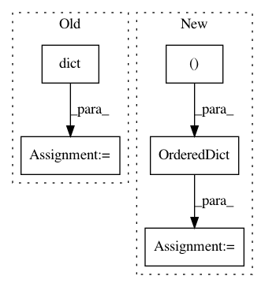

6ab028cc39f079c1229a50d674088ff41b7163d2,batchflow/batch_image.py,BaseImagesBatch,BaseImagesBatch_1,#,84
Before Change
components = "images", "labels", "masks"
// Class-specific defaults for :meth:`.Batch.apply_transform`
apply_transform_defaults = dict(target="for",
init="indices",
post="_assemble",
src="images",
dst="images",
all=False)
def _make_path(self, ix, src=None):
Compose path.
After Change
components = "images", "labels", "masks"
// Class-specific defaults for :meth:`.Batch.apply_transform`
transform_defaults = OrderedDict([("target", "for"),
("init", "indices"),
("post", "_assemble"),
("src", "images"),
("dst", "images"),
("all", False)])
def _make_path(self, ix, src=None):
Compose path.
In pattern: SUPERPATTERN
Frequency: 3
Non-data size: 5
Instances
Project Name: analysiscenter/batchflow
Commit Name: 6ab028cc39f079c1229a50d674088ff41b7163d2
Time: 2020-03-06
Author: 53620809+cdtn@users.noreply.github.com
File Name: batchflow/batch_image.py
Class Name: BaseImagesBatch
Method Name: BaseImagesBatch_1
Project Name: merenlab/anvio
Commit Name: 889d2fb5679c6f7cbd5ed91428242edb5f497d95
Time: 2020-03-01
Author: kiefl.evan@gmail.com
File Name: anvio/profiler.py
Class Name: BAMProfiler
Method Name: generate_variabile_nts_table
Project Name: merenlab/anvio
Commit Name: 889d2fb5679c6f7cbd5ed91428242edb5f497d95
Time: 2020-03-01
Author: kiefl.evan@gmail.com
File Name: anvio/profiler.py
Class Name: BAMProfiler
Method Name: generate_variabile_codons_table